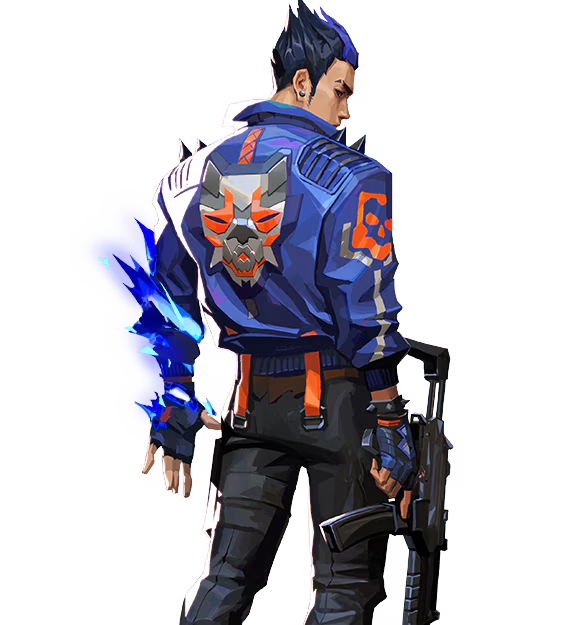

Yoru

国籍: 日本
ロール: デュエリスト
Yoruはステルスとテレポートを駆使して敵を欺く能力に長けたエージェントです。彼のアビリティは、敵を混乱させ、奇襲攻撃を仕掛けるのに最適です。
公式トレーラー
スキル
| スキル名 | 値段 | 所持上限 | 説明 |
|---|---|---|---|
| フェイクアウト (C) | 100 | 2個 | 敵を欺くためのデコイを設置し、敵の注意を引きます。デコイは敵の射撃を受けると爆発し、フラッシュ効果を発揮します。 |
| ブラインドサイド (Q) | 200 | 2個 | 壁を通り抜けるフラッシュグレネードを投げ、敵の視界を遮ります。 |
| ゲートクラッシュ (E) | 無料 | 1個 | テレポートビーコンを設置し、再度使用することでその位置にテレポートします。 |
| ディメンショナルドリフト (X) - アルティメット | - | 1個 | 短時間、無敵状態で移動できる。敵に発見されずに移動し、奇襲攻撃を行うことが可能です。 |
立ち回りとおすすめマップ
攻めの立ち回り
Yoruは敵の背後に回り込むことを得意とします。フェイクアウトとブラインドサイドを使って敵の注意を引き、ゲートクラッシュでテレポートして奇襲攻撃を仕掛けます。
守りの立ち回り
守りでは、フェイクアウトを使って敵を欺き、ブラインドサイドで敵の進行を妨害します。ゲートクラッシュを適切に配置して、素早くポジションを変えることが重要です。
アルティメットの活用
ディメンショナルドリフトを使って敵の背後に回り込み、重要なキルを狙います。このスキルを使うことで、敵の防衛ラインを崩壊させることが可能です。